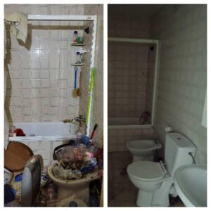

El Síndrome de Diógenes puede ser algo que es tentador descartar como excentricidad, un mal hábito o el resultado de la pereza. Pero es una condición psicológica real y abrumadora en la que alguien no puede descartar o deshacerse de sus artículos sin sentirse extremadamente angustiado. Y siempre se trata de una gran variedad de elementos que sienten que deben 'guardar', a menudo no tienen ningún valor percibido para nadie excepto para ellos.
Durante mucho tiempo, el acaparamiento fue visto como un síntoma de otro diagnóstico psicológico, el trastorno de personalidad obsesivo compulsivo (OCPD ). También se pensó que a veces aparecía en casos severos de trastorno obsesivo compulsivo (TOC ). Pero en muchos casos de acaparamiento extremo no se encontraron signos de ninguno de estos otros trastornos, y la versión más reciente y quinta edición del conocido Manual de Diagnóstico y Estadístico para los Trastornos Mentales (DSM) de los Estados Unidos ahora enumera el "Trastorno de acaparamiento" como un diagnóstico independiente .
Al igual que todos los trastornos de salud mental, el trastorno de acaparamiento afecta directa y sistemáticamente la vida de un paciente. Esto puede incluir poner en peligro la salud y la seguridad, socavar la seguridad financiera y enfatizar las relaciones con amigos y familiares.
¿Es acaparamiento o se está acumulando?

A la mayoría de nosotros nos gusta tener cosas. Ya sea que se trate de un cobertizo lleno de herramientas y equipos de jardinería o zapatos que tengan su propio armario, el mundo está lleno de objetos que agregan variedad y placer a nuestras vidas.
Ir a las tiendas es divertido, reemplazar aparatos electrónicos y electrodomésticos obsoletos es satisfactorio, y los coleccionistas disfrutan de organizar, exhibir y agregar a sus colecciones.
Con los acumuladores, no hay "reemplazo", solo agrega más a la pila. Y tampoco es un acto de disfrute para los acumuladores. El revoltijo de adquisiciones desencadena sentimientos de vergüenza y desesperación.Señas de identidad del acaparamiento
Como cualquiera que haya visto programas de televisión sobre el acaparamiento se ha dado cuenta, las casas de los acaparadores se ven significativamente diferentes a las personas que no sufren este trastorno. Las viviendas a menudo están repletas de pertenencias, en la medida en que es imposible ver el piso, los muebles u objetos individuales enterrados en el desorden.
Este es el resultado final de los pensamientos y comportamientos desordenados que sufre el acumulador, que incluyen:
- Sobreapego intenso y emocional a los objetos, independientemente del valor, importancia o utilidad de los elementos.
- Compulsión por adquirir, a menudo visto como "rescate" de artículos, guardarlos para regalar o restaurarlos para revenderlos
- Incapacidad para separarse de los artículos . Una vez en la casa, es poco probable que los objetos se vayan, y los intentos de descartar incluso los bienes estropeados e inutilizables provocan intolerables sentimientos de ansiedad.
- Falta de capacidad para organizar , cuidar, ubicar, utilizar o disfrutar de los artículos adquiridos.
- Incapacidad para priorizar . El espacio habitable, incluidas las áreas utilizadas para dormir, bañarse y cocinar, se entrega al tesoro. El dinero necesario para gastos como facturas de servicios públicos puede gastarse en más adquisiciones
- Falta de conciencia sobre la gravedad de la situación , su impacto y el empeoramiento de las condiciones de vida. Incluso la comodidad personal, la salud y la seguridad no se tienen en cuenta.
- Estrés emocional. El acaparamiento suele ir acompañado de sentimientos de ansiedad, depresión , ira, vergüenza, miedo, impotencia, dolor, soledad u otras emociones dolorosas difíciles.
¿Qué tipo de persona atesora?
Gracias a una mayor conciencia e informes, ahora se sabe que el acaparamiento es mucho más común de lo que se pensaba anteriormente. Según el DSM, hasta cinco de cada 100 personas sufren de acaparamiento.
Y a pesar de los estereotipos de las señoras de los gatos, el acaparamiento en realidad no es principalmente una enfermedad de la mujer. Un estudio de 2008 en la Universidad John Hopkins encontró que el acaparamiento es más común en hombres que en mujeres, pero que a las mujeres simplemente les gusta más buscar ayuda o llamar la atención de los servicios sociales.
Aún más sorprendente podría ser que los niños y los adultos jóvenes pueden ser acumuladores, pero a menudo no son vistos como tales porque los padres controlan su entorno y actividades , o ven la recolección de bajo nivel como una fase. Los padres deben estar atentos a los síntomas, como un niño pequeño que se aferra indiscriminadamente a juguetes rotos o un adolescente socialmente aislado cuya habitación se convierte en una fortaleza inaccesible de objetos.
La ayuda temprana de un terapeuta puede ayudar a disuadir problemas mayores más adelante en la vida.
Factores de riesgo para convertirse en un acaparador
No hay una "causa" de acaparamiento. Al igual que con muchos otros trastornos mentales, hay una serie de factores que ponen a la persona en riesgo. Éstas incluyen:
Genética y Química Cerebral
Tener un miembro de la familia que sea un acumulador por Síndrome de Diógenes aumenta el riesgo de convertirse en un acumulador usted mismo. Los escáneres cerebrales encontraron que las áreas de toma de decisiones del cerebro son diferentes en los acumuladores, sugiere un factor de riesgo que radica en la química cerebral heredada, no en el comportamiento aprendido o en un entorno desordenado.
Coexistencia de otro trastorno
Si bien no es cierto en todos los casos, muchas personas que atesoran sufren algún tipo de ansiedad, particularmente TOC o TEPT. La coexistencia de la ansiedad es tan común que el acaparamiento se consideró inicialmente un síntoma o una variación de la ansiedad.
Sin embargo, los investigadores han identificado suficientes diferencias entre los dos y suficientes casos en los que un trastorno existe independientemente del otro, para ver el acaparamiento como un trastorno independiente.
El acaparamiento también suele ir acompañado de depresión, que florece a medida que las condiciones de vida y las relaciones sociales se deterioran.
Experiencias traumáticas de la vida
Las historias de vida de los acaparadores por Síndrome de Diógenes rara vez están libres de traumas significativos. La pérdida de un padre de un hermano, el castigo severo o el abuso sexual durante la infancia, la pérdida de un compañero de vida por muerte o abandono, ser víctima de guerra o crímenes violentos, o perder una carrera que era esencial para la identidad de uno, todo puede transformar una tendencia. para amontonarse en un caso de atesoramiento extremo.
Envejecimiento
El Síndrome de Diógenes empeora con el tiempo y a menudo se convierte en un problema en la mediana edad y más allá. Las pérdidas y los traumas experimentados anteriormente en la vida pueden parecer más grandes que nunca, y la esperanza de que la vida mejore lentamente se erosiona.
Este es un momento de la vida en el que las personas pueden comenzar a experimentar problemas de salud o una pérdida de poder adquisitivo que fomenta sentimientos de vulnerabilidad e impotencia. Puede darse un tipo de abandono, e incluso las tareas simples que se realizaron antes, como sacar la basura, pueden descuidarse.
Obteniendo ayuda para su Síndrome de Diógenes
Muchas personas no reciben ayuda hasta que el acaparamiento desencadena una crisis , como acciones legales o desalojos, bancarrota, lesiones resultantes de resbalones y caídas, alienación de amigos y familiares, o la intervención de familiares preocupados.
El acaparamiento en sí mismo es estresante, y abordar el problema antes de que ocurra una crisis es preferible a hacerlo cuando estás bajo amenaza de desalojo o te preocupa que te quiten a tus mascotas o hijos.
Si siente que el desorden ha tomado la delantera en su vida, se siente impotente o paralizado por eso, o decide que el acaparamiento ha tenido un impacto negativo en su rendimiento laboral, su vida social o sus relaciones con los miembros de la familia, es hora de ayuda.
¿Qué puede esperar del tratamiento para el acaparamiento compulsivo?
No hay medicamentos que ayuden directamente a la acumulación. Si bien los medicamentos recetados para problemas coexistentes como el TOC y la depresión pueden ayudar indirectamente al disminuir la ansiedad y mejorar la perspectiva y el estado de ánimo, la forma más común y efectiva de lidiar con el acaparamiento es a través de la terapia cognitiva conductual (TCC) .
Un terapeuta con experiencia en el tratamiento de Síndrome de Diógenes lo ayudará a explorar, comprender y redirigir las necesidades de acumulación.
Él o ella también lo ayudarán con habilidades prácticas, como disminuir la ansiedad que conlleva el desorden, mejorar su capacidad para tomar decisiones acertadas sobre qué conservar y qué descartar, y lo ayudarán a desarrollar formas más efectivas de lidiar con sentimientos de pérdida y soledad.
Los terapeutas que tratan el trastorno de acaparamiento pueden hacer visitas domiciliarias y solicitar la ayuda de un organizador profesional que lo ayudará a alcanzar, con el tiempo, su objetivo de tener un espacio de vida atractivo, seguro y utilizable.
¿Cómo puedes ayudar a un acaparador?
Los amigos y la familia pueden desempeñar un papel importante en ayudar a alguien a lidiar con el trastorno de acaparamiento. Para el momento en que un acaparador recibe ayuda, las condiciones de vida a menudo están fuera de control y están más allá de la capacidad de la persona de rectificar por sí misma.
La ayuda para limpiar el tesoro, la limpieza de la Acaparación e incluso contribuir con fondos para reparaciones y servicios de transporte son formas prácticas en las que puede ayudar.
Si no ha estado en la casa del acaparador durante algún tiempo, las condiciones pueden horrorizarlo.
En lugar de mostrar enojo, o hacer preguntas improductivas como, '¿Cómo dejaste que las cosas se descontrolaran tanto?' Diríjase a la persona de su parte que se preocupa por ellos. Declaraciones como "Te mereces algo mejor que esto" y "Si estás listo para limpiar esto, estoy aquí para ayudar" serán más productivas. Hacer que la persona se sienta avergonzada o empujarla a una posición defensiva solo hará que se aferren más al tesoro, ya que sienten que es todo lo que tienen.
Ayudar a alguien a limpiar un tesoro no es fácil.
El trabajo físico es agotador, a menudo repugnante y, a veces, incluso peligroso. Depende de usted establecer límites para lo que puede manejar, tanto en términos de acumulación como de acumulación.
Durante el proceso de limpieza de Diógenes, el acumulador se muestra más enojado y vulnerable.
Idealmente, la persona ya ha entrado en terapia, adquirió una idea de los problemas que surgirán y le ha pedido al terapeuta que esté disponible. Incluso en este mejor de los casos, es probable que se pruebe su paciencia.
El que sufre síndrome de diógenes experimentará altos niveles de estrés y oleadas de emociones difíciles. Él o ella puede responder volviéndose beligerante, distrayendo y ralentizando el proceso mirando cada elemento trivial para asegurarse de que no se arroje nada de valor, transportando elementos de la pila de "descarte" a la casa u ordenando a todos que salgan de la propiedad.
Puede ayudarlo a reunir la paciencia que necesita si intenta ver las cosas desde el punto de vista del Síndrome de Diógenes.
Recuerde, lo que es inútil para usted está cargado de emoción por ellos.
Imagine lo angustiado que se sentiría si un amigo o familiar le dijera que se está deshaciendo de su mascota, un artículo de gran valor sentimental o el único par de zapatos que tiene, y comenzará a comprender la alarma que siente la persona durante este proceso.
También recuerde que lo que ve es un intento de hacer frente a la desesperación emocional y la soledad, no el resultado de la pereza.
La terapia familiar es parte del tratamiento para muchos acumuladores Compulsivos.
Aquí es donde puedes expresar tus sentimientos de una manera que ayude al acaparador a comprender cómo su comportamiento ha afectado a los demás. Los cónyuges e hijos a menudo sienten que el acumulador ha elegido objetos sobre ellos, y expresar estos sentimientos en un entorno mediado puede ser el primer paso para limpiar las relaciones vitales para la recuperación a largo plazo del acumulador.
Su amor y comprensión pueden ser incentivos poderosos para ayudar al acaparador a hacer los cambios difíciles que se avecinan.
¿Tienes una experiencia con el acaparamiento que te gustaría compartir? ¿O una pregunta sobre el trastorno de acumulación que le gustaría hacer? Hazlo a continuación y comienza la conversación.
Limpieza de Diógenes Madrid TELÉFONO DE URGENCIAS 608 32 07 42